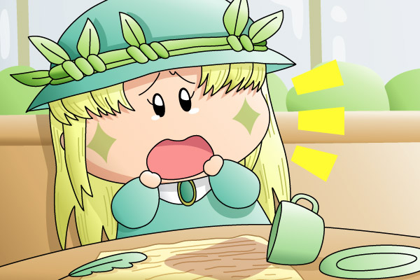

アロマ「あぁ、また紅茶をこぼしてしまいましたわ…」
９５話（「大物妖精Ｍ、電撃婚約！？」）でしか活躍していないアロマちゃん。この９５話を頼りにアロマちゃんの性格を想像するしかないのですが、おしとやかな性格の裏で、本人がムルモに打ち明けた通りにドジなところも多いんじゃないでしょうか(^^)。
中でもぶりっこムルモを裏ムルモ化させた”紅茶こぼし”はしょっちゅうなのかもしれません。名付けて”紅茶こぼしのアロマ”！？ 今回の絵も、幼なじみの彼に渡そうとする手紙（以前描いた「アロマ＆パピィ(1)」の絵を参照）を喫茶店で書いていたアロマちゃんですが、書き終わったタイミングで手にした紅茶を手紙にこぼしてしまい…(^^:。
うーん、帽子や髪など線の数が多いアロマちゃんを描くのに疲れてしまい、背景がかなり手抜き～(^◇^;)。特にアロマちゃんの手紙はもう少し手紙っぽくすべきだった…（妖精文字をちゃんと書くべきだった）。まぁ手紙の文章は、私の頭では考えることが不可能なほどのしっかりしたものなんでしょうけど(^^;。
それにしてもアロマちゃんはなかなか再登場してくれませんね。幼なじみの彼とのエピソードが放送されれば、彼女に関する物語がどんどんふくらむんだけどなぁ。アニメスタッフさん、ぜひアロマちゃんの再登場を！
(2004/8/28)